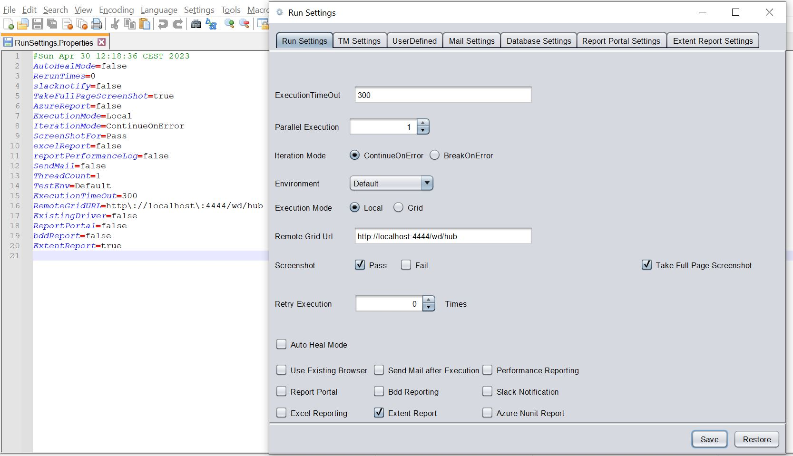

Command Line Interface
The tool has a rich set of command line options for execution with parameters, retrieving execution details, setting variables, change settings etc.
Options |
Output |
|---|---|
-v,--version |
Display current build details |
-run |
Run with the given details |
-rerun |
Rerun the last execution |
-project_location |
Project Location for Execution |
-scenario |
Scenario Name |
-testcase |
Testcase Name |
-browser |
Browser Name (Not applicable for Testset Execution) |
-release |
Release Name |
-testset |
Testset Name |
-tags |
Tags of Test Cases to be exceuted |
-bDate |
Display current build date |
-bTime |
Display current build time |
-bVersion |
Display current build version |
-dont_launch_report |
Disables launching summary report after execution |
-help |
Help |
-hi |
Says Hello! |
-t |
Display Current Time |
-latest_exe |
Returns the given property value for the latest execution |
-latest_exe_loc |
Returns the results folder for the latest execution |
-latest_exe_status |
Returns the status for the latest execution |
-latest_exe_data_loc |
Returns the Report data location for the latest execution |
-latest_exe_data_raw |
Returns the Report data for the latest execution |
-latest_exe_log_loc |
Returns the log file location for the latest execution |
-latest_exe_log_raw |
Returns the log file for the latest execution |
-latest_exe_perf_status |
Returns the page load performance results for latest execution |
-latest_exe_perf_report |
Returns the page load performance report for latest execution |
-checkPagePerf |
Returns the page load performance results after Run |
-setVar |
Create/Set user defined variable [-setVar "var=value"] |
-setEnv |
Create/Set Env settings |
-standalone_report |
Create Standalone Report instead of Relative one |
The examples below are shown with Run.bat, but same set of cli options are available for Run.command to be used in Linux or MAC.
- Single Test Case Execution
Run.bat -run -project_location "Projects\Demo" -scenario "NewScenario" -testcase "NewTestCase" -browser "Chrome"
- Test Set Execution
Run.bat -run -project_location "Projects\Demo" -release "NewRelease" -testset "NewTestSet"
- Test Set Execution with specific tags
Run.bat -run -project_location "Projects\Demo" -release "NewRelease" -testset "NewTestSet" -tags "@Smoke"
- Test Set Execution with Updated Environment Settings
Run.bat -run -project_location "Projects\Demo" -release "NewRelease" -testset "NewTestSet" -setEnv "run.TestEnv=Acceptance"
In the above example, the test set will be forced to be executed on Acceptance Environment
-setEnv is a very powerful command to override all the environment settings and userdefined variables.
This can override the values in all of these settings :

Lets look at the Run Settings for a Test Set. If we enter into the project location and navigate to the following location :
Settings\TestExecution\<ReleaseName>\<TestSetName>
We will find the RunSettings.Properties and the TestMgmtSettings.Properties files.
The RunSettings.Properties holds all the corresponding settings that we enter via the UI of the tool.

Any of these properties can be overriden by -setEnv.
For Example: -setEnv "run.TakeFullPageScreenShot=False"
Similarly, if we go to the project location and navigate to Settings\ directory, the userDefinedSettings.Properties holds all the corresponding data that we enter via the UI of the tool.
We can use by -setEnv to override these values too.
For Example: -setEnv "user.Key1=NewValue1"
For the following settings, -setEnv can be used as follows :
|Settings|option|
|--------|-------|
|Global settings| -setEnv "exe.SettingName=Value"|
Run Settings | -setEnv "run.SettingName=Value"|
User Defined Settings | -setEnv "user.SettingName=Value"|
Driver Settings | -setEnv "driver.SettingName=Value"|
Test Management Settings | -setEnv "tm.SettingName=Value"|
Multiple settings can be altered via a single command as well :
-setEnv "run.var=value;exe.var=value;user.var=value"